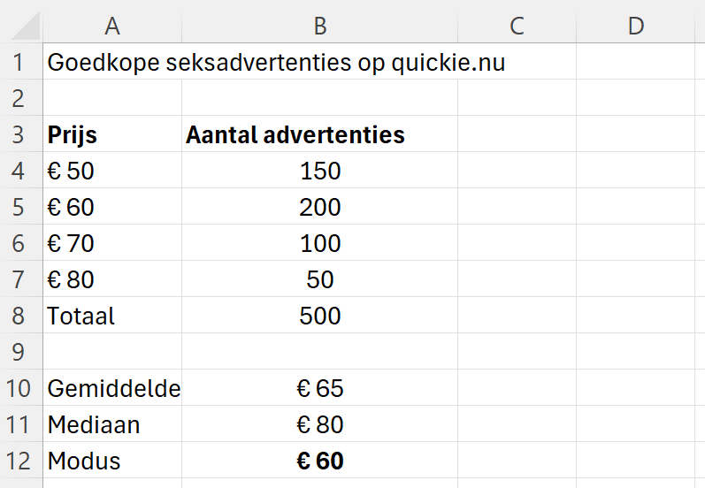

Een onderzoek naar de goedkoopste Nederlandse seksadvertenties op het internet
Om uit te zoeken waar men goedkope seks advertenties op het internet kan vinden, zijn we het internet afgestruind om een lijst samen te stellen van de advertentiesites en de prijzen waarmee door de vrouwen voor seks met privé ontvangst wordt geadverteerd. De resultaten van dit onderzoek worden hier besproken, bovenaan is quikie.nu geëindigd met de goedkoopste advertenties.
En om vervolgens tot een lijst te komen met alle sekssites die advertenties van vrouwen tonen, hebben we gezocht op het trefwoord "goedkope seksadvertenties", daarnaast hebben we ook een variant daarvan uitgetest - rekening houdend met het feit dat veel mensen seks vaak als sex schrijven - door te zoeken op "goedkope sex advertenties". De samengestelde lijst bestond uit zes sites waarvan er uiteindelijk maar twee in het onderzoek zijn meegenomen omdat de overige websites alleen advertenties bevatten die doorverwijzen naar een betaling en dus niet authentiek zijn. We kijken alleen naar seksadvertenties met thuisontvangst die door de vrouw zelf zijn geplaatst en waarmee je direct in contact kunt komen via haar telefoonnummer zonder betaling.
De twee sites met sex advertenties van echte vrouwen zijn kinky.nl en de nieuwkomer quickie.nu. We hebben de prijzen van de advertenties vergeleken en uit de onderzoeksresultaten komt naar voren dat quickie.nu de allergoedkoopste seksadvertenties heeft. Hierbij moet wel vermeld worden dat quickie.nu zich volledig richt op de vrouw met thuisontvangst die zichzelf aanbiedt voor een vluggertje.
Goedkope seksadvertenties op quickie.nu
Op de website van quickie.nu zijn we alleen advertenties tegengekomen van vrouwen die seksuele diensten vanuit hun eigen woning aanbieden. Dit betekend dat deze dames als freelancer werken en er dus geen sprake is van een tussenpersoon of werkgever, hierdoor kunnen de vrouwen de prijs laag houden. Je kunt je voorstellen dat een vrouw die voor een privehuis werkt en dus in principe in loondienst is, een deel moet afdragen aan het bedrijf, sterker nog, waarschijnlijk bepaald het bordeel de prijs voor een potje seks net zoals bijvoorbeeld een consultancybureau meestal het uurtarief bepaald voor de consultant die werk voor een klant uitvoert.
Op kinky.nl kom je niet alleen advertenties van vrouwen tegen maar ook allerlei andere genders en seksuele diensten die meer niche zijn, daar horen vaak ook weer andere (vaak hogere) prijzen bij.
Iets anders dat opviel is dat er op quickie.nu maar een prijs staat bij elke advertentie, en die is van toepassing op maar een seksuele dienst, namelijk een vluggertje van vijftien minuten. Voor de prijs kun je een pijpbeurt verwachten met condoom en gewone seks in de standjes naar jouw keuze. Voor een vluggertje seks liggen de prijzen natuurlijk lager dan voor een half uur of een uur lang seksen.
Is dat de reden dan de advertenties goedkoop zijn? Niet per se, want als we de seksadvertenties op kinky.nl naast die van quickie.nu neerleggen, dan zien we dat de laatstgenoemde nog steeds voordeliger is. Een kanttekening is wel op zijn plaats hier, want omgerekend per minuut is een half uur seks goedkoper dan 15 minuten seks bij de dame thuis.
Onderzoeksresultaten
Uit ons onderzoek kunnen we dus concluderen dat quickie.nu de goedkope sex advertenties van Nederland heeft.

Als we naar de beschrijvende statistieken in de tabel hierboven kijken dan zien we dat de modus van de prijs 60 euro is, dit betekend dat advertenties met deze prijs het meest voorkomen. Andere interessante centrummaten zijn het gemiddelde en de mediaan, deze zijn respectievelijk 65 euro en 80 euro. De mediaan is in dit geval niet representatief voor het algemene prijsbeeld op quickie.nu omdat de advertenties niet symmetrisch verdeeld zijn. Ook het gemiddelde is enigszins verwarrend omdat met deze prijs niet geadverteerd wordt, het meest logische zou zijn om naar beneden af te ronden omdat 200 advertenties met 60 euro voorkomen ten opzichte van maar 100 advertenties met 70 euro. Al met al, zijn goedkope seksadvertenties makkelijk te vinden, aangezien 350 van de 500 onderzochte advertenties seks met privé ontvangst voor 60 euro of minder aanbieden.